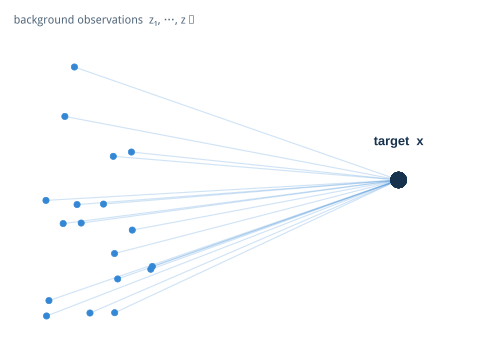
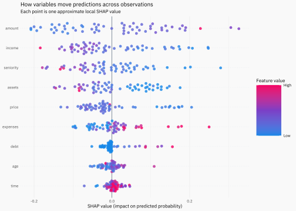

Build a SHAP explanation from the predictions produced while transforming a background observation into the observation we want to explain.
R
machine-learning
explainability
Author
Joshua Kunst
Published
August 14, 2026
SHAP is usually introduced through Shapley values, coalitions and game theory. All of that matters, but I find it easier to first look at the actual rows that a model sees.
The idea in this post is simple: start from one background observation, transform it into the observation we want to explain one variable at a time, and watch how the model prediction changes along the way.
A model and a prediction
Assume we already have a credit-risk model, a training sample, a test sample and a vector with the predictor names. The details of the model are not important for what follows, so the preparation code is folded below.
One background row is useful for understanding a single path, but it is not a privileged reference. The eventual explanation uses many background observations, each offering a different route toward the same target x.
set.seed(2026)background_diagram<-tibble::tibble( x =runif(18, 0.05, 0.32), y =runif(18, 0.08, 0.92), xend =0.82, yend =0.50)ggplot(background_diagram)+geom_segment(aes(x, y, xend =xend, yend =yend), color =scales::alpha("#3487d4", 0.23), linewidth =0.55, arrow =grid::arrow(length =grid::unit(0.09, "inches")))+geom_point(aes(x, y), color ="#3487d4", size =2.6)+geom_point(aes(xend, yend), color ="#17324d", size =7)+annotate("text", x =0.18, y =0.99, label ="background observations z₁, …, zₙ", color ="#52677b", size =4)+annotate("text", x =0.82, y =0.62, label ="target x", color ="#17324d", fontface ="bold", size =4.5)+coord_cartesian(xlim =c(0, 1), ylim =c(0, 1), clip ="off")+theme_void()

This is only a conceptual diagram—the real paths live in predictor space—but it captures the role of the background sample: many plausible starting points are transformed toward the same observation we want to explain.
Now we can put the observation we want to explain, x, next to the background observation, z.
We have two rows, two sets of values and two model predictions. Instead of jumping directly from z to x, let’s move from one to the other one variable at a time.
Now start from z. Replace the first variable with its value in x, then the second one, then the third one, and continue until every value comes from x.
If we display the columns in the same order in which they were introduced, the construction has a staircase-like shape. At each row, one more value has moved from z to x.
The model does not know anything about SHAP here. It simply predicts ten observations.
Because only one variable changes between consecutive rows, the difference between two consecutive predictions can be assigned to the variable that just changed.
Both paths start at the same prediction, p(z), and finish at the same prediction, p(x). What changes is how the total difference is distributed among the variables.
This is the first key idea behind SHAP:
There is no single privileged order in which the variables should enter the prediction.
For nonlinear models and models with interactions, the context in which a variable is introduced matters.
From one path to many paths
Trying every possible order quickly becomes impossible. With nine variables there are already 9! = 362,880 possible orders.
Instead, we can sample paths.
There is another arbitrary choice in our example: the background observation itself. Why should one particular z define our reference?
So we repeat the same experiment over many observations from the background. For each background observation we draw a random variable order, build the path to x, predict every row and keep the consecutive differences.
set.seed(2026)trace<-dplyr::bind_rows(lapply(seq_len(nrow(background)), function(i){variable_order<-sample(predictors)one_path( model =model, x =x, z =background[i, ], variable_order =variable_order)|>dplyr::mutate(background_id =i, .before =1)}))glimpse(trace)
This is a Monte Carlo approximation of marginal SHAP: instead of enumerating every possible permutation, we sample paths and average the contribution assigned to each variable.
Adding the contributions
There is a useful property hiding in plain sight.
The official SHAP introduction shows the same idea with a waterfall: begin at the expected model output and add the feature contributions until reaching the prediction for one observation.1 Our path construction lets us see where those additions come from. For an R-focused explanation, the Explanatory Model Analysis guide shows how DALEX::predict_parts() decomposes one prediction into contributions from individual variables.2
For any single path, the contributions are consecutive differences:
This is why the familiar SHAP waterfall works: start from the background prediction, add the contribution of each variable, and arrive at the prediction for the observation we wanted to explain.
From SHAP values to a waterfall
Now that we have the pieces, we can draw the same type of waterfall used in the SHAP Explorer app.
The first bar is the mean prediction over the background sample. Each variable then moves the prediction up or down by its SHAP value. Red contributions increase the predicted probability of default, blue contributions decrease it, and the final bar is the prediction for x.
The order of the bars here is only a display choice: the SHAP values have already been averaged across the sampled paths.
Code
library(highcharter)profile_labels<-c( seniority ="Seniority", time ="Loan term", age ="Age", expenses ="Expenses", income ="Income", assets ="Assets", debt ="Debt", amount ="Loan amount", price ="Price")contribution_points<-lapply(seq_len(nrow(shap_values)), function(i){value<-100*shap_values$shap[[i]]variable<-shap_values$variable[[i]]list( name =unname(profile_labels[[variable]]), y =unname(value), color =if(value>=0)"#d95f59"else"#4c91d9")})waterfall_data<-unname(c(list(list( name ="Background<br/>mean", y =100*background_mean, color ="#e0e0e0")),contribution_points,list(list( name ="Predicted<br/>PD", isSum =TRUE, color ="#34495e"))))highchart()|>hc_add_dependency("modules/waterfall.js")|>hc_chart(type ="waterfall")|>hc_xAxis(type ="category")|>hc_yAxis(title =list(text ="Probability of default (%)"))|>hc_legend(enabled =FALSE)|>hc_tooltip(pointFormat ="{point.y:.1f}")|>hc_plotOptions(series =list( borderWidth =0, dataLabels =list( enabled =TRUE, inside =FALSE, useHTML =TRUE, style =list( color ="#495057", fontWeight ="normal", textOutline ="none"), formatter =JS(paste("function () {"," if (this.point.isSum || this.point.index === 0) {"," const value = Highcharts.numberFormat(this.y, 1) + '%';"," return '<span style=\"font-size: 13px; font-weight: 600\">' + value + '</span>';"," }"," return (this.y >= 0 ? '+' : '') + Highcharts.numberFormat(this.y, 1) + ' pp';","}")))))|>hc_add_series( name ="PD", data =waterfall_data)
The chart is just another view of the identity we checked above:
Before moving to the summary, it is worth distinguishing two familiar SHAP views. The waterfall above is local: it explains one prediction. A beeswarm is global: every point represents one observation’s contribution for one variable. Horizontal position shows whether that variable moved the prediction down or up; color shows whether the original feature value was relatively low or high. The vertical spreading only prevents overlapping points and reveals the distribution.
set.seed(2026)global_targets<-test|>dplyr::slice_sample(n =60)|>dplyr::select(dplyr::all_of(predictors))global_trace<-dplyr::bind_rows(lapply(seq_len(nrow(global_targets)), function(target_id){target_x<-global_targets[target_id, , drop =FALSE]background_ids<-sample.int(nrow(background), 15, replace =TRUE)dplyr::bind_rows(lapply(background_ids, function(background_id){one_path( model =model, x =target_x, z =background[background_id, , drop =FALSE], variable_order =sample(predictors))}))|>dplyr::summarise( shap =mean(contribution), .by =variable)|>dplyr::mutate(target_id =target_id)}))feature_values<-global_targets|>dplyr::mutate(target_id =dplyr::row_number())|>tidyr::pivot_longer( cols =dplyr::all_of(predictors), names_to ="variable", values_to ="feature_value")global_shap<-global_trace|>dplyr::left_join(feature_values, by =c("target_id", "variable"))|>dplyr::mutate( scaled_value =scales::rescale(feature_value, to =c(0, 1)), .by =variable)|>dplyr::mutate( variable =reorder(variable, abs(shap), FUN =mean))
ggplot(global_shap, aes(shap, variable, color =scaled_value))+geom_vline(xintercept =0, color ="#8a96a3", linewidth =0.5)+ggbeeswarm::geom_quasirandom( groupOnX =FALSE, width =0.32, size =1.7, alpha =0.82)+scale_color_gradientn( colors =c("#1687e8", "#7b3fc6", "#f40064"), limits =c(0, 1), breaks =c(0, 1), labels =c("Low", "High"))+labs( title ="How variables move predictions across observations", subtitle ="Each point is one approximate local SHAP value", x ="SHAP value (impact on predicted probability)", y =NULL, color ="Feature value")+theme( panel.grid.major.y =element_line(color ="#e4e9ee", linetype =3), legend.position ="right")

The complete calculation can be summarized without game theory notation:
Pick an observation x to explain.
Pick a background observation z.
Randomly order the predictors.
Transform z into x, one variable at a time.
Predict every intermediate row.
Take differences between consecutive predictions.
Repeat for more background observations and variable orders.
Average the differences by variable.
That average is our SHAP approximation.
I like this construction because the explanation emerges from objects we already know how to inspect: rows, predictions and differences. The formal Shapley framework tells us why averaging across different contexts is the right thing to do, but the staircase of observations shows what the model is actually being asked to evaluate.
The helper one_path() exists only to package the repeated unit of work: build one path, predict its intermediate states and return the consecutive differences. Keeping that operation named makes the sampling loop readable without hiding the algorithm.
The same idea is used in my SHAP Explorer, where the readable implementation is intentionally kept next to the optimized version. The optimized code is faster; the slow version is there because it makes the algorithm easier to see.
Try it yourself
The SHAP Explorer below uses the same construction interactively. Change the client profile or the model and watch how the local contributions, the waterfall and the predicted probability move together.